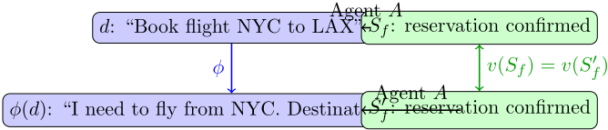
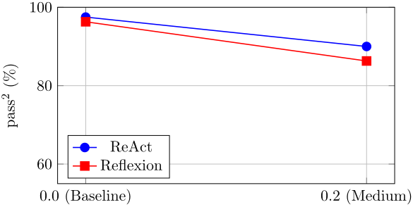
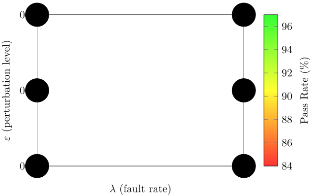
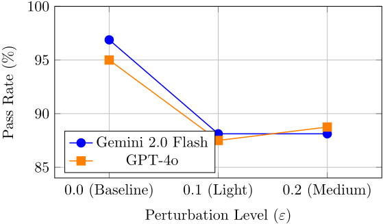
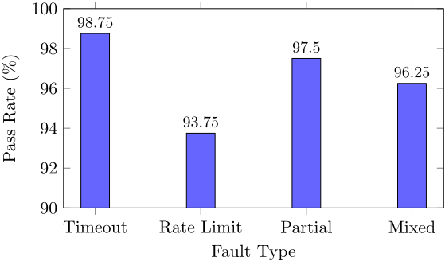

ReliabilityBench：在生产级压力条件下评估 LLM Agent 可靠性
现有工具调用 Agent 基准多以理想条件下的单次成功率衡量表现，系统性高估了生产环境中的真实可靠性。ReliabilityBench 提出从三个维度评估 Agent 可靠性：重复执行一致性（pass^k）、任务扰动鲁棒性（ε 级别）与基础设施故障容忍度（λ 级别），并以统一的 Reliability Surface R(k, ε, λ) 刻画三者的交互退化。方法上引入 Action Metamorphic Relations（以终态等价而非文本相似判定正确性）与借鉴 chaos engineering 的故障注入框架（transient timeout、rate limit、partial response、schema drift），在四个模拟域、两种模型（Gemini 2.0 Flash、GPT-4o）与两种架构（ReAct、Reflexion）上共执行 1,280 episodes。关键结论：扰动使 pass@1 从 96.9% 降至 88.1%；限流故障影响最大；简单 ReAct 在压力下反而优于 Reflexion；GPT-4o 成本是 Gemini 2.0 Flash 的 82 倍而可靠性相当。对团队而言，该基准方法可直接用于内部 Agent 工具上线前的可靠性压测、故障恢复验证与架构/模型选型决策。
现有工具调用 LLM Agent 基准（ToolBench、AgentBench、API-Bank 等）主要报告理想条件下的单次成功率，系统性高估生产可靠性；τ-bench 虽引入 pass^k 一致性指标，但仅覆盖一致性单一维度，未涉及用户表述变化（扰动）与基础设施故障（API 间歇性失败、数据格式漂移）对 Agent 可靠性的影响，而生产系统同时面临这三类挑战且它们之间存在交互。
提出 ReliabilityBench 三维评测框架：(1) 以 Reliability Surface R(k, ε, λ) 统一刻画一致性（pass^k）、鲁棒性（ε 扰动级别：同义替换、重排、干扰项、改写）与容错性（λ 故障强度），并派生 Surface Volume、Degradation Gradient、Critical Threshold 等指标；(2) Action Metamorphic Relations——对任务描述施加扰动，但正确性由终态等价（end-state equivalence）而非输出文本相似判定；(3) 借鉴 chaos engineering 的故障注入框架，在工具执行层包装注入 transient timeout、rate limit、partial response、schema drift 等生产故障，提供 LAMBDA_PROFILES 预设配置；(4) 采用确定性状态校验器（检查状态字典是否满足任务谓词）替代 LLM judge。在 scheduling、travel、customer support、e-commerce 四个模拟域上评估 Gemini 2.0 Flash 与 GPT-4o 两种模型、ReAct 与 Reflexion 两种架构。
扰动导致显著退化：ε=0 时 pass@1 为 96.9% 的 Agent 在 ε=0.2 时降至 88.1%（下降 8.8%）
故障类型消融（λ=0.2，320 episodes）：rate limit 影响最大（成功率 93.75%，比混合基线低 2.5%），transient timeout 最易处理（98.75%）
退化梯度：Reflexion 为每 0.1λ 下降 0.50，ReAct 为 0.38，表明自反思机制可能放大而非缓解故障影响
GPT-4o 成本是 Gemini 2.0 Flash 的 82 倍，但可靠性相当（差 -0.6%）；1,280 episodes 总实验成本低于 $10
Gemini 2.0 Flash 基线（ε=0, λ=0）pass^2 达 96.88%，在扰动与故障联合压力下降至 84.0%
ReAct 在故障恢复上优于 Reflexion，作者归因于其更简单的重试逻辑
Scheduling 域（简单、确定性）达到完美一致性；Travel 域（多步含搜索决策点）方差更高
相对已有工作的区别：(1) τ-bench 仅测一致性维度，本文首次将一致性、鲁棒性、容错性统一为三维 Reliability Surface 并测量其交互退化；(2) 据作者所述，这是首次将 chaos engineering 原则系统性应用于 LLM Agent 评测，提供可配置的故障注入 profile；(3) 提出 Action Metamorphic Relations，将 metamorphic testing 的等价判据从文本相似改为 Agent 任务所需的终态等价；(4) 使用确定性状态校验而非 LLM judge 或文本匹配进行成功判定。
相关度级别：high
命中能力域：3.3 Agent 架构与工具使用 | 3.5 评测与可靠使用
理由：论文核心正是 3.5 域的'Agent/LLM 应用评测基准与方法、可靠性、成本与效率优化'：它针对单次 pass@1 高估生产可靠性这一团队在部署 Agent 自动化工具时必然遇到的问题，给出可操作的三维评测方法与故障注入工具。同时其对 ReAct 与 Reflexion 在压力下的执行可靠性对比、Agent 对工具故障（限流、超时、schema drift）的重试与恢复行为分析，直接命中 3.3 域的'单 Agent 的执行可靠性'与'工具/函数调用'。团队构建代码生成与审查、文档、测试辅助、知识库问答等 Agent 工具，上线前可靠性验证与架构/模型成本效益选型是真实痛点，本文方法与结论均可直接借鉴。
建议动作：深入精读并做内部分享
arXiv:2601.06112v1 [cs.AI] 2026年1月3日
Aayush Gupta
aayush.gupta@gohighlevel.com
2025年1月2日
针对工具调用型大语言模型（LLM）Agent 的现有基准测试（benchmark）主要衡量单次运行成功率，未能捕捉对生产部署至关重要的可靠性特征。我们提出 ReliabilityBench，这是一个从三个维度评估 Agent 可靠性的 benchmark：重复执行下的一致性（k 次尝试通过率）、对任务扰动的鲁棒性（ε 级别）以及基础设施故障下的容错性（λ 级别）。ReliabilityBench 建立在 τ-bench 的 pass k 指标之上，并受站点可靠性工程（Site Reliability Engineering）中混沌工程（chaos engineering）思想的启发，引入了：（1）可靠性曲面（Reliability Surface）R(k, ε, λ)——一个刻画一致性、鲁棒性与容错性之间交互作用的统一评估框架；（2）动作蜕变关系（Action Metamorphic Relations）——一类扰动策略，其正确性由终态等价而非文本相似度来定义；（3）面向 Agent 的混沌工程框架（Chaos Engineering Framework），通过系统化故障注入涵盖瞬态超时、速率限制、部分响应和 schema 漂移。我们在四个领域（日程安排、旅行、客户支持、电子商务）上评估了多个模型（Gemini 2.0 Flash、GPT-4o）和多种 Agent 架构（ReAct、Reflexion），共 1,280 个回合，覆盖完整的三维可靠性曲面。我们的结果表明，扰动会造成显著退化：在 ε = 0 时达到 96.9% pass@1 的 Agent，在 ε = 0.2 时降至 88.1%（下降 8.8%）。消融实验表明，速率限制类故障造成的影响最大（比混合基线低 2.5%）。我们发现，在压力条件下，更简单的 ReAct Agent 表现优于更复杂的 Reflexion 架构；而 GPT-4o 的成本是 Gemini 2.0 Flash 的 82 倍，可靠性却相当（差异为 -0.6%）。ReliabilityBench 提供了首个用于评估 LLM Agent 生产就绪程度的系统性框架。
大语言模型（Large Language Model, LLM）Agent 在生产系统中的部署正在急剧加速。从客户服务自动化到软件工程助手，这些 Agent 越来越多地承担起执行多步骤工作流的任务，需要与外部工具和应用程序编程接口（API）交互 [1,2]。然而，针对这些系统的评估方法与生产需求之间仍然存在根本性的错位。
以一个大规模部署的旅行预订 Agent 为例。关键问题并不是“这个 Agent 能否预订航班？”，而是：“如果我们针对同一请求的多种不同表述将该 Agent 运行 1,000 次，在存在偶发 API 故障的真实网络条件下，预订成功的比例会是多少？”当前的基准测试（benchmark）——ToolBench [3]、AgentBench [4]、API-Bank [5]——提供的单次运行成功率会系统性地高估生产可靠性。
τ-bench [9] 对基准测试性能与生产可靠性之间的这一差距进行了量化，其结果表明，pass@1 达到 60% 的 Agent 在多次试验中可能仅表现出 25% 的一致性。然而，τ-bench 仅考察了可靠性的一个维度：重复执行下的一致性。生产系统还面临其他挑战：用户对请求的表述各不相同，API 会间歇性失效，数据格式也会发生意料之外的演变。
1
我们识别出 Agent 可靠性的三个正交维度，而现有基准测试未能捕捉到这些维度：
这些维度之间以复杂的方式相互作用。某个 Agent 可能在理想条件下保持一致，但在扰动下却表现脆弱；另一个 Agent 或许能从容处理故障，却无法理解经过改写表述的指令。孤立地评估每个维度只能提供不完整的图景。
工具调用型大语言模型（LLM）的快速发展催生了大量评估基准测试（benchmark）。ToolBench [3] 提供了 16,000 多个真实世界的 API 及自动生成的指令，支持对工具选择与编排的大规模评估。API-Bank [5] 在 73 个 API 上评估 API 调用准确性，重点关注参数提取。ToolAlpaca [6] 则通过模拟的 API 响应强调对未见工具的泛化能力。
AgentBench [4] 将评估范围扩展到包括操作系统、数据库和网页浏览在内的八种不同环境，以度量通用 Agent 能力。SWE-bench [7] 专门针对软件工程任务，使用真实的 GitHub issue 和仓库上下文。
这些 benchmark 存在一个共同的局限：它们报告的是理想化条件下的单次运行成功率。StableToolBench [8] 通过缓存响应部分地解决了 API 稳定性问题，但既未引入受控故障注入，也未度量一致性。
τ -bench [9] 是与我们工作最接近的先行研究。它引入了 pass k 指标：
并证明一致性指标能够揭示被 pass@1 所掩盖的根本性局限。然而，τ -bench 仅考察一致性维度，并未纳入扰动或故障注入。
ReliabilityBench 将 τ -bench 的这一洞见扩展为一个多维度框架，在一致性之外还涵盖鲁棒性与容错性。
蜕变测试（metamorphic testing）[10,11] 通过验证输入与输出之间的关系而非绝对正确性，来解决软件测试中的预言机问题（oracle problem）。蜕变关系（metamorphic relation, MR）规定了当输入以已知方式变换时，输出应当如何相应变换。
蜕变测试已被成功应用于机器学习系统。DeepTest [12] 与 DeepXplore [13] 将图像变换（旋转、亮度、模糊）用作自动驾驶系统的蜕变关系。CheckList [14] 通过编码预期不变性的模板，为自然语言处理（NLP）引入了行为测试。
针对 Agent 评估，我们提出了动作蜕变关系（Action Metamorphic Relations），其等价性判据是最终状态而非输出文本。如果两个任务描述应当产生相同的最终系统状态（例如，一个已预订的会议），则无论中间动作或响应格式如何，它们都构成一个蜕变对。
NLP 模型对对抗性扰动的鲁棒性已得到广泛研究。TextFooler [15] 与 BERT-Attack [16] 通过词替换生成语义相似的对抗样本。TextAttack [17] 为针对文本分类器的对抗攻击提供了一个统一框架。
这些方法针对的是正确性表现为离散标签的分类模型。Agent 任务则带来了不同的挑战：正确性由通过一系列动作达成目标状态来定义，且扰动必须保持的是任务语义而非分类标签。
混沌工程（chaos engineering）源于 Netflix 的 Simian Army [18]，通过系统性地向生产系统注入故障来验证韧性。该方法已在站点可靠性工程（Site Reliability Engineering）实践中得到规范化，并被扩展到各种领域。
3
经典故障注入（fault injection）[20] 为注入硬件与软件故障提供了基础方法论。TensorFI [21] 将故障注入应用于神经网络加速器。Humbatova 等人 [22] 提供了深度学习系统中真实故障的分类体系。
据我们所知，ReliabilityBench 是首个将混沌工程原理系统性应用于 LLM agent 评估的工作，提供了可配置的故障配置文件（fault profiles）来模拟生产环境中的失效模式。
| Benchmark | Consistency | Robustness | Fault Injection | Multi-Domain |
|---|---|---|---|---|
| ToolBench | × | × | × | ✓ |
| AgentBench | × | × | × | ✓ |
| API-Bank | × | × | × | ✓ |
| SWE-bench | × | × | × | × |
| τ -bench | ✓ | × | × | ✓ |
| StableToolBench | × | × | Partial | ✓ |
| ReliabilityBench | ✓ | ✓ | ✓ | ✓ |
| Benchmark | Consistency | Robustness | Fault Injection | Multi-Domain |
ReliabilityBench 独特地将全部三个可靠性维度与多领域评估相结合。
我们现在给出 ReliabilityBench 底层的数学框架，将可靠性曲面（reliability surfaces）、动作蜕变关系（action metamorphic relations）与故障画像（fault profiles）等概念形式化。
定义 1（智能体任务）。任务 τ = ( d, S 0 , T , v ) 由以下部分组成：
定义 2（智能体执行）。智能体 A 是一个策略，在给定任务描述 d 和当前状态 S 的情况下，产生一个工具调用序列：
若 v ( S f , S 0 ) = 1，则执行成功。
我们从三个维度定义可靠性指标。
4
参照 τ-bench [9]，一致性衡量重复执行的成功情况：
定义 3（pass k）。对于任务 τ 和 Agent A，pass k 指标为：
其中 success i 表示第 i 次独立运行是否成功。
在相互独立的假设下，pass k = (pass 1) k，但随机耦合常常会导致偏差。
定义 4（扰动等级 ε）。扰动等级 ε ∈ [0, 1] 定义任务描述修改的强度：
其中 w i 为蜕变关系 MR i 的权重。
我们定义离散等级：ε = 0（基线）、ε = 0.1（轻度：同义词替换）、ε = 0.2（中度：+ 重排、干扰项）、ε = 0.3（重度：+ 改述、更正）。
定义 5（故障强度 λ）。故障强度 λ ∈ [0, 1] 规定每次工具调用发生故障注入的概率：
其中 f 为特定于配置档的分布。
我们定义以下配置档：λ = 0（基线）、λ = 0.1（轻度：5-10% 失败）、λ = 0.2（中度：15-20%）、λ = 0.3（重度：25-30%）。
定义 6（可靠性曲面，Reliability Surface）。对于智能体 A 和任务分布 D，可靠性曲面定义为：
该曲面刻画了可靠性如何同时在全部三个维度上发生退化。关键的派生指标包括：
曲面体积（Surface Volume）：
退化梯度（Degradation Gradient）：
临界阈值（Critical Threshold）：R 降至可接受水平 θ 以下的点 (k∗, ε∗, λ∗)。
与传统的蜕变测试（metamorphic testing）不同，后者的输出等价性是文本层面的，而 Agent 任务要求的是终态等价性（end-state equivalence）。
定义 7（动作蜕变关系，Action Metamorphic Relation）。一个 Action-MR 是一个元组 ( ϕ, ψ )，其中：
在大多数情况下，ψ 为恒等映射：v ( S f , S 0 ) = v ( S ′ f , S 0 )。

我们实现了以下 Action-MR：
| Category | MR Type | Description |
|---|---|---|
| Linguistic | Synonym Paraphrase Voice | Replace keywords with synonyms LLM-based rephrasing Active/passive voice change |
| Structural | Reordering Split/Merge | Permute constraint order Divide or combine instructions |
| Contextual | Distractor Correction | Add irrelevant information Include mid-task corrections |
| Temporal | Date Format Relative Time | Vary date representations 'tomorrow' vs '2024-01-15' |
| Category | MR Type | Description |
受混沌工程（chaos engineering）[18] 的启发，我们定义了一个生产故障的分类体系。
定义 8（故障类型，Fault Type）。一个故障 F = ( p, effect , recovery) 规定了：
定义 9（故障剖面，Fault Profile）。级别 λ 下的故障剖面 Λ 定义了：
其中 ∑ i p i ( λ ) ≈ λ 对应基线失效率。
6
| Category | Fault Type | Recoverable | Realistic Source |
|---|---|---|---|
| Network | TransientTimeout ConnectionReset | ✓ ✓ | API latency spike Load balancer |
| Rate Limit | SoftRateLimit HardRateLimit | ✓ × | 429 responses Account suspension |
| Data | PartialResponse SchemaDrift StaleData EmptyResponse | ✓ × × ✓ | Truncated payload API version mismatch Cache inconsistency No results |
| Category | Fault Type | Recoverable | Realistic Source |
ReliabilityBench 包含四个具有真实复杂度的领域：
调度（Scheduling）：日历管理，涉及会议预订、改期与冲突检测。工具：book meeting、check calendar、cancel meeting、list meetings。
差旅（Travel）：具有多步骤工作流的航班搜索与预订。工具：search flights、hold flight、confirm booking、get itinerary。
客户支持（Customer Support）：结合知识库集成与升级（escalation）工作流的工单管理。工具：create ticket、update ticket、close ticket、escalate ticket、search knowledge base、list open tickets。
电子商务（E-commerce）：产品搜索、下单与退货，并支持优惠券使用。工具：search products、check inventory、create order、check order status、process return、apply coupon。
每个领域维护一个由工具修改的状态字典。任务是否成功通过将最终状态与任务特定的谓词进行比对来验证。
与依赖 LLM 评判器（LLM judges）或文本匹配的基准测试不同，ReliabilityBench 采用确定性的基于状态的预言（oracle）：
例如，旅行领域的验证器会检查：
reservations[flight_id].status == "confirmed" reservations[flight_id].passenger ==
任务以受控的复杂度级别生成：
expected_passenger
7
| Domain | Level 1 | Level 2 |
|---|---|---|
| Scheduling Travel Support E-commerce | Simple booking Direct flight booking Create & close ticket Simple order | Conflict handling Find cheapest flight Search KB + escalate Find cheapest + coupon |
| Domain | Level 1 | Level 2 |
我们实现了两种 Agent 架构：
ReAct [1]：交替进行推理与行动，采用思维-行动-观察循环。
Reflexion [23]：在 ReAct 基础上对失败进行自反思，并对轨迹进行精炼。
两种架构均使用函数调用，工具参数采用 JSON 格式，并接收结构化的工具输出。
故障注入器对工具执行进行封装：
| Model | pass 2 | ε = 0 . 0 | ε = 0 . 1 | ε = 0 . 2 | Cost |
|---|---|---|---|---|---|
| Gemini 2.0 Flash | 91.04% | 96.88% | 88.12% | 88.12% | $ 0.12 |
| GPT-4o | 90.42% | 95.00% | 87.50% | 88.75% | $ 9.77 |
| ∆ (GPT-4o - Gemini) | -0.62% | -1.88% | -0.62% | +0.63% | 82 × |
| Model | pass 2 | ε = 0 . 0 | ε = 0 . 1 | ε = 0 . 2 | Cost |
| Architecture | Surface Volume | ε = 0 Pass | ε = 0 . 2 Pass |
|---|---|---|---|
| ReAct | 0.9 | 97.5% | 90.0% |
| Reflexion | 0.875 | 96.3% | 86.3% |
| Architecture | Surface Volume | ε = 0 Pass | ε = 0 . 2 Pass |
关键观察：
9
| Domain | pass@1 | pass 2 | Avg Tool Calls |
|---|---|---|---|
| Scheduling | 100% | 100% | 2.1 |
| Travel | 87.5% | 75.0% | 5.4 |
| Support | 91.7% | 83.3% | 4.8 |
| E-commerce | 87.5% | 75.0% | 4.6 |
| Domain | pass@1 | pass 2 | Avg Tool Calls |
调度任务（简单、确定性）实现了完全的一致性。旅行任务（多步骤且涉及搜索）由于航班选择中存在决策点，表现出更高的方差。

故障等级（
Reflexion 的退化梯度 ∂R ∂λ（每 0.1 λ 为 -0.50）比 ReAct（-0.38）更陡峭，这表明自我反思机制可能会放大而非缓解故障影响。
| Metric | ReAct | Reflexion |
|---|---|---|
| Faults Encountered | 47 | 52 |
| Successful Recoveries | 38 (80.9%) | 35 (67.3%) |
| Additional Tool Calls on Fault | +1.2 | +1.8 |
| Metric | ReAct | Reflexion |
ReAct 展现出更优的故障恢复能力，这可能是由于其重试逻辑比 Reflexion 更复杂的反思-重试机制更为简单。
10
为了解哪些故障类型对可靠性影响最大，我们开展了消融实验，在 λ = 0.2 条件下逐一隔离每种故障类型（共 320 个回合）。
表 9：故障类型消融结果（λ = 0.2，320 个回合）。注："Faults Encountered"（遇到的故障）统计的是显式错误响应（超时、429 错误）；被修改的响应（部分数据）会影响成功率，但不计为故障。
| Fault Type | Pass Rate | vs Mixed | Impact |
|---|---|---|---|
| Timeout Only | 98.75% | +2.50% | Minimal |
| Rate Limit Only | 93.75% | -2.50% | Highest |
| Partial Response Only | 97.50% | +1.25% | Low |
| Mixed (Baseline) | 96.25% | - | - |
| Fault Type | Pass Rate | vs Mixed | Impact |
消融实验的主要发现：
| Model | Total Tokens | Total Cost | Cost/100 ep | Ratio |
|---|---|---|---|---|
| Gemini 2.0 Flash | 1,192,209 | $ 0.12 | $ 0.025 | 1 × |
| GPT-4o | 1,188,450 | $ 9.77 | $ 2.04 | 82 × |
| Model | Total Tokens | Total Cost | Cost/100 ep | Ratio |
与 GPT-4o 相比，Gemini 2.0 Flash 提供了 82 倍的成本效率，同时具备相当（且略优）的可靠性，使其成为大规模 Agent 评估的明确选择。1,280 个回合的总实验成本低于 10 美元。1
图 3 展示了在 k = 2 次试验条件下，Gemini 2.0 Flash 在 ε 和 λ 两个维度上的实测可靠性曲面。
图 4 展示了可靠性随扰动强度增加而退化的情况，证明了动作蜕变关系（Action Metamorphic Relations）的实际影响。
1 成本于 2024 年 12 月测量，使用 Gemini 2.0 Flash，价格为 $ 0.075/1M 输入 token、$ 0.30/1M 输出 token；GPT-4o 价格为 $ 2.50/1M 输入 token、$ 10.00/1M 输出 token。
11

对失效的定性分析揭示了不同的模式：
旅行领域失效：Agent 未能提供预订确认所需的支付信息，表明其上下文处理存在缺失。
支持领域失效：升级逻辑不一致——Agent 有时会关闭本应升级的工单。
故障诱发的失效：速率限制错误导致 Agent 放弃任务而非重试；schema 漂移错误会在后续的工具调用中传播。
我们的研究结果对 LLM Agent 的部署具有直接的指导意义：
规模：我们的实验在所有配置下共使用了 1,280 个回合。虽然这提供了合理的统计功效，但生产规模的评估可能需要 10,000 个以上的回合，才能对罕见故障模式获得较窄的置信区间。


扰动深度：我们实现了 ε ∈ { 0 . 0 , 0 . 1 , 0 . 2 } 的扰动水平。更高强度的扰动（ε = 0 . 3）结合多变换组合的情形留待未来工作。
模型覆盖：我们评估了 Gemini 2.0 Flash 和 GPT-4o。更广泛的模型比较（Claude、Llama、Mistral、开源模型）将增强关于泛化性的主张。
合成任务：虽然我们的领域模拟了真实的工作流，但它们缺乏具备外部 API、身份验证和实时数据依赖的生产系统的完整复杂性。
k 值范围：我们在 k = 2 次试验的设置下进行评估。更高的 k 值（4、8）将揭示更陡峭的一致性退化曲线。
ReliabilityBench 旨在用于评估，而非对已部署系统生成对抗性攻击。故障注入框架应仅用于部署前测试，不得在未经授权的情况下用于发现生产系统中的漏洞。
13
我们提出了 ReliabilityBench，一个用于在类生产条件下评估大语言模型（LLM）agent 可靠性的基准测试（benchmark）。通过横跨两个模型与两种 agent 架构的 1,280 个回合，我们建立了针对 3D 可靠性曲面的首个全面评估。我们的贡献包括：
随着 LLM agent 从研究原型走向生产系统，评估方法学也必须随之演进。ReliabilityBench 为这一关键评估提供了首个系统性框架，使从业者能够就 agent 的部署就绪度做出明智的决策。
book_meeting(date: str, time: str, topic: str) -> str 在指定日期和时间预订会议。check_calendar(date: str) -> str 返回给定日期已安排的所有会议。cancel_meeting(date: str, time: str) -> str 取消指定时段的会议。str
list_meetings(start_date: str, end_date: str) -> 列出日期范围内的所有会议。
search_flights(origin: str, dest: str, date: str) -> str 搜索可用航班。
hold_flight(flight_id:
对航班进行临时保留。
confirm_booking(flight_id:
str, passenger:
str,
payment_info:
确认已保留的航班预订。
get_itinerary()
返回当前预订。
create_ticket(customer_id: str, subject: str, description: str, priority: str) -> 创建新的支持工单。update_ticket(ticket_id: str, status: str, priority: str, note: str) -> str 更新工单字段。
close_ticket(ticket_id: str, resolution: str) -> str 关闭工单并附上解决摘要。
16
escalate_ticket(ticket_id: str, reason: str, escalate_to: str) -> str 将工单升级至更高支持层级。search_knowledge_base(query: str, category: str) -> str 在知识库中搜索相关文章。list_open_tickets(priority: str, customer_id: str) -> str 列出未关闭的工单，可使用可选过滤条件。
search_products(query: str, category: str, min_price: float, max_price: float) -> str 使用过滤条件搜索产品目录。check_inventory(sku: str) -> str 检查特定产品的库存。create_order(customer_id: str, items: List[Dict], shipping_address: str, coupon_code: str) -> str 创建新订单。check_order_status(order_id: str) -> str 返回订单详情和状态。process_return(order_id: str, items: List[str], reason: str, refund_method: str) -> str 处理产品退货。apply_coupon(code: str, order_subtotal: float) -> str 验证并计算优惠券折扣。
LAMBDA_0_0 = { # 基线 "failure_rate": 0.0, "fault_weights": {} } LAMBDA_0_1 = { # 轻度 "failure_rate": 0.075, "fault_weights": { "TransientTimeout": 0.4, "HighLatency": 0.3, "EmptyResponse": 0.3 } } LAMBDA_0_2 = { # 中度
17
"failure_rate": 0.175, "fault_weights": { "TransientTimeout": 0.25, "SoftRateLimit": 0.25, "PartialResponse": 0.2, "SchemaDrift": 0.15, "StaleData": 0.15 } } LAMBDA_0_3 = { # 重度 "failure_rate": 0.275, "fault_weights": { "TransientTimeout": 0.15, "ConnectionReset": 0.15, "HardRateLimit": 0.15, "PartialResponse": 0.15, "SchemaDrift": 0.2, "CascadingFailure": 0.2 }
18